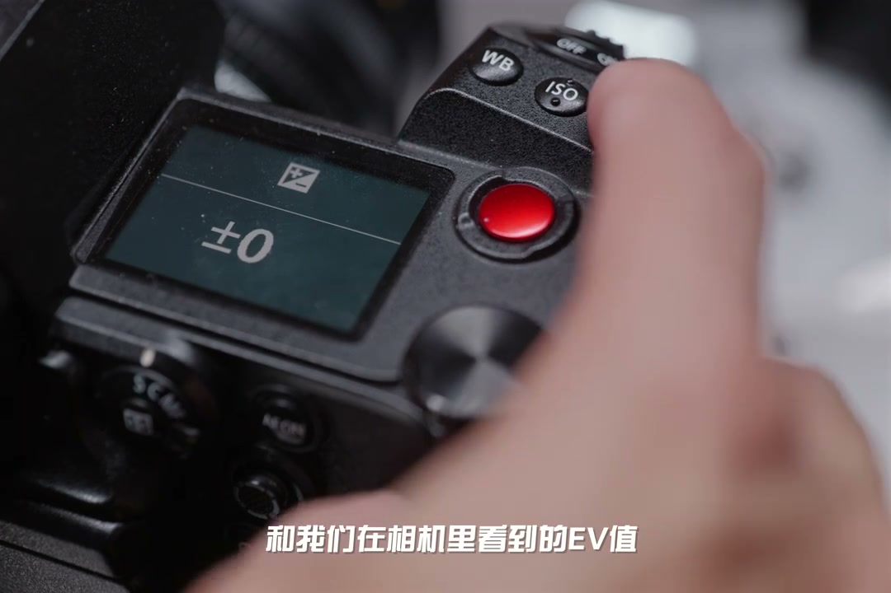
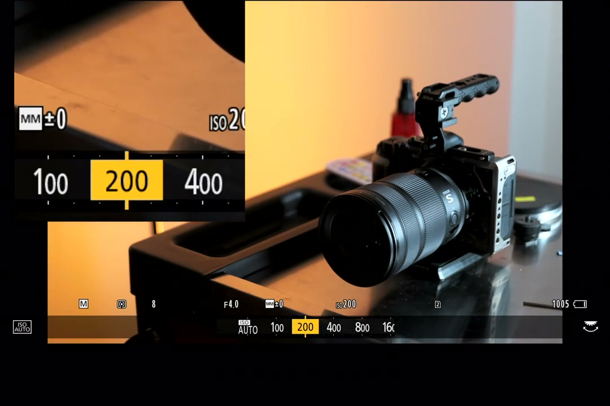
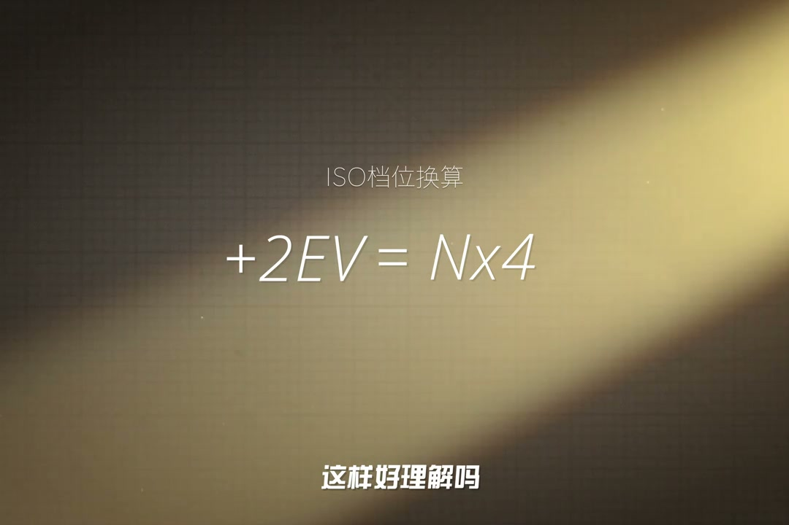
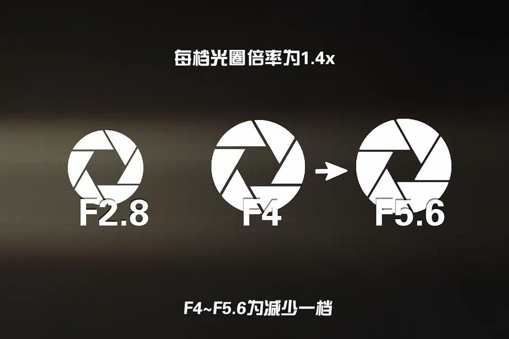
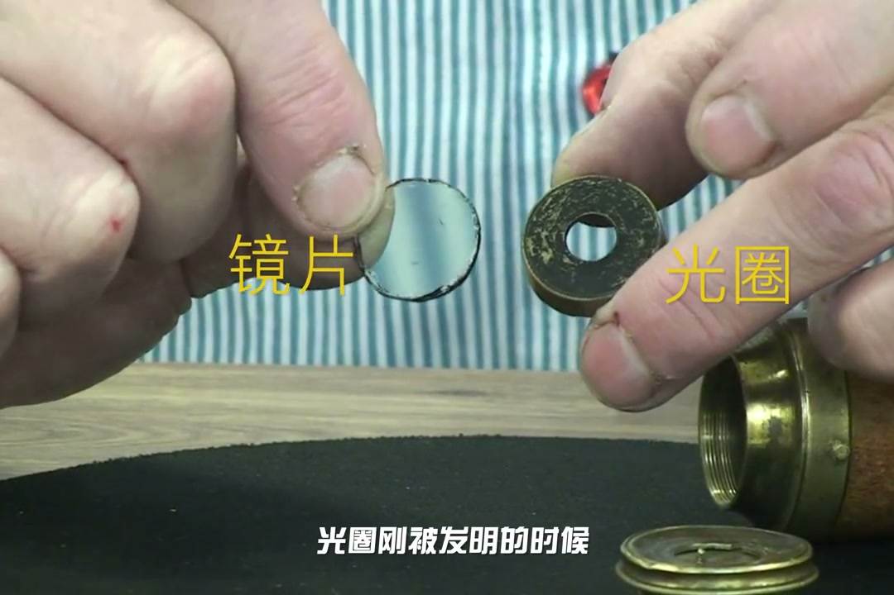
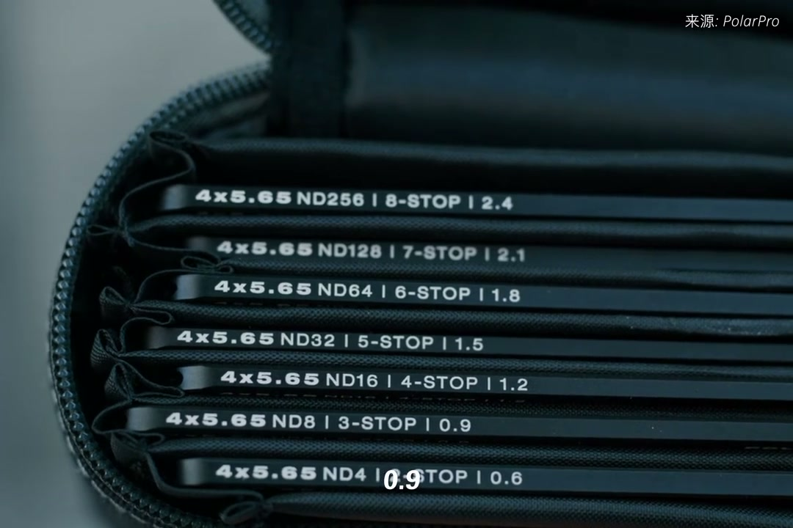

内容要点
[00:00] 我们通常都会听到过一档曝光
[00:02] 过曝一档
[00:03] 那么一档到底是什么意思
[00:04] 是怎么来的
[00:05] 一档这个词
[00:06] 在英语里叫做stop
[00:08] 和我们在相机里看到的EV值
[00:10] 基本是一样的东西
[00:12] 加减EV等于加减一档曝光
[00:15] 加一档是增加一倍的亮度
[00:17] 而减少一档则是减一半的亮度
[00:19] 例如200%的E秒的快门
[00:22] 延长至100%的E秒
[00:23] 可以增加一档曝光
[00:25] ISO100增加至一倍的ISO200
[00:28] 也可以增加一档曝光
[00:30] 如果想要减少一档的话
[00:31] 你当前只出以二就好
[00:33] 那么加两档
[00:34] 就并不是两倍曝光了
[00:36] 而是两倍乘以两倍等于四倍曝光
[00:39] 这样好理解吗
[00:40] 光圈有点点狡猾
[00:42] 因为牵扯到圆形面积
[00:44] 所以它每档的倍率是奇怪的1.4
[00:47] F4出于1.4等于2.8
[00:49] F4到F2.8为增加一档
[00:52] 也称开一档光圈
[00:54] F4乘以1.4等于5.6
[00:56] F4到5.6为减少一档
[00:59] 也称收益档光圈
[01:00] 另一个显著的规律
[01:02] 是每个档位上的数字
[01:03] 是上上档位的两倍
[01:05] STOP档这个词也是源于光圈
[01:08] 严格来说是为望远镜
[01:09] 减低入光的装置
[01:11] 光圈刚被发明的时候
[01:12] 调节光圈需要把镜头整体拆散
[01:15] 换上不同尺寸的光孔
[01:17] 而到了19世纪50年代
[01:19] John Waterhouse约翰水方先生
[01:21] 发明了插片式光孔
[01:23] 大大提升换光圈的效率
[01:25] 这些插片被称之为WaterhouseStops
[01:28] 顾名思义他们阻止了光的进入
[01:30] 市面上的ND镜也采用这个档标准
[01:33] 不过他们的单位名称再次有所不同
[01:36] ND2X
[01:37] ND4X
[01:39] ND8X
[01:40] 这些是减光倍率
[01:42] 或者0.3、0.6、0.9
[01:44] 为光密度
[01:46] 对应的也是1档、2档、3档
[01:48] 最后给大家看看他们的单位对照
[01:50] 这样就很明了了
[01:51] 今天就分享到这
[01:53] 感谢收看这期视频
[01:53] 我是老粹
[01:54] 我们下期见





